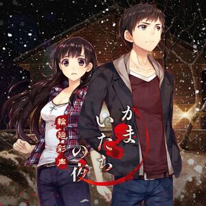

РАЗДЕЛ 01 / ПЕРЕВОДЫ ВРУЧНУЮ
Переводы игр
Переводы игр и страницы проектов.
ПРОЕКТЫ01 — 03

ПЕРЕВОД ВРУЧНУЮ · ДОСТУПЕН
Danganronpa 2: Прощай, Академия Отчаяния
Визуальная новелла · Детектив · Русский язык

ПЕРЕВОД ВРУЧНУЮ · ДОСТУПЕН
Zero Escape: Virtue's Last Reward
Визуальная новелла · Головоломки · Русский язык

ДЕМО ПЕРЕВОДА · РУССКИЙ ЯЗЫК
Kamaitachi no Yoru: Rinne Saisei
Визуальная новелла · Детектив · Триллер